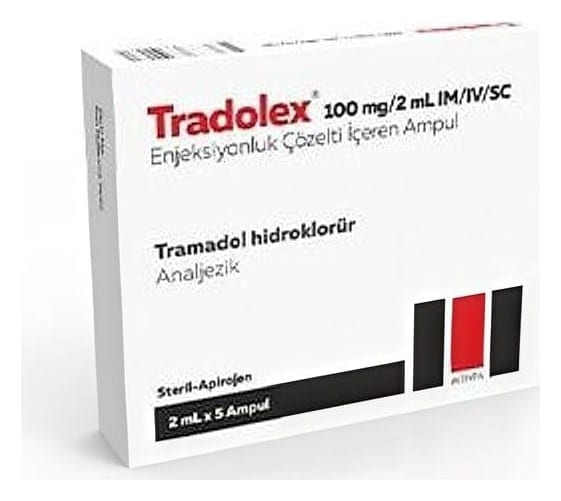

Tradolex 100 mg/2 ml IM/IV/SC Enjeksiyonluk Çözelti, 5 Ampul

Ne için kullanılır
KT · Bölüm 1TRADOLEX her kutuda 2 ml’lik 5 ampul içerir. TRADOLEX’in etkin maddesi tramadol santral sinir sistemine etki eden bir ağrı kesicidir. Omurilik ve beyinde özel sinir hücreleri üzerine etki ederek ağrıyı giderir. TRADOLEX orta veya şiddetli ağrıların tedavisinde kullanılır.